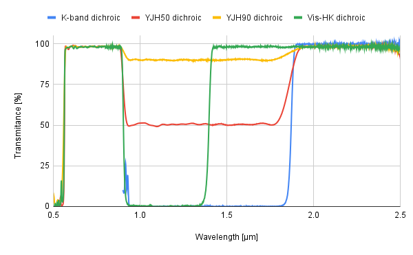
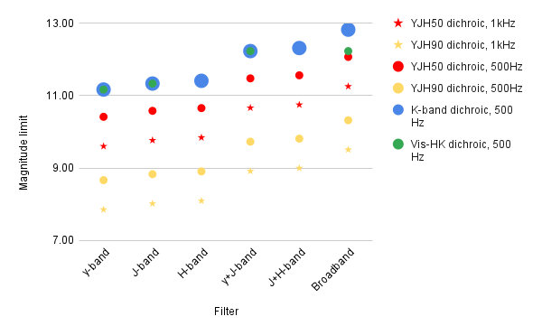

Near-IR Wavefront Sensor - Planning Observations
Please read section 1 carefully before submitting the proposal.
If you want to use the NIR WFS inside AO188, you need to find a Natural Guide Star (NGS) that is bright enough at less than 10" separation from your target of interest. The target of interest can be the NGS itself if it is a bright enough stellar object. Non-sidereal tracking is currently not available with NIR WFS.
Read the following instructions carefully if you wish to apply for observing time with AO188. If technical details described in your proposal are incomplete, it may be rejected even if your science case is great.
- 1. Information you have to describe in your proposal
- 2. Selecting AO guide stars
- 3. Planning dates of observations
- 4. Overheads
1. Information you have to describe in your proposal
The following should be clearly stated in the proposal.
- H-band (or J-band if the Vis-HK Dichroic is used) magnitude of your AO guide stars (see section 2 for details).
- One or several choices for the dichroic beamsplitter used, depending on the brightness of the NGs (see section 2 for details).
- Separation between your targets and AO guide stars (see section 2 for details).
- Strehl ratio and/or FWHM of the point-spread function (PSF) required for your project.
- Whether the AO guide star is a point source or not.
--- If you use an extended object, binary objects, or a star associated with nebulosity, you must describe a FWHM of its spatial distribution, their separation, or contrast between the star and nebulosity, respectively (see section 2 for details). - Schedule requirement to avoid the moon's glare which severely degrades the AO loop performance (see section 3 for details).
- Other usual requirements for the science instrument used (IRCS, SCExAO). Please check their respective webpages
2. Selecting AO guide stars
Throughput and Dichoic Choice
|  | NIRWFS Dichroic transmission to the science instrument. |
|---|
{kind=link}
Magnitude Limit
Magnitude limits listed in this section are for the AO correction to deliver 0.1 arcsec FWHM in median conditions. AO correction perfomance at the faint limit is strongly affected by atmospheric conditions, including turbulence coherence time. Magnitude values are calculated for A-type stars with flat spectra. Very red objects will be limited by the H-band magnitude limit before the broadband magnitude limit.|  | Guide star magnitude limit. The frequencies listed in the legend are the AO loop frequency. Correction at 500 Hz might be worst than at 1 kHz depending on the atmospheric conditions (seeing, coherence time). |
|---|
{kind=link}
| Filter | Dichroic | |||
|---|---|---|---|---|
| K-band | YJH50 | YJH90 | Vis-HK | |
| Y-band | mY=11.2 | mY=10.4 | mY=8.7 | mY=11.2 |
| J-band | mJ=11.3 | mJ=10.6 | mJ=8.8 | mJ=11.3 |
| H-band | mH=11.4 | mH=10.7 | mH=8.9 | N/A |
| Y+J-band | mJ=12.2 | mJ=11.5 | mJ=9.7 | mJ=12.2 |
| J+H-band | mH=12.3 | mH=11.6 | mH=9.8 | N/A |
| broadband | mH=12.8 | mH=12.1 | mH=10.3 | mH=12.2 |
3. Planning dates of observations
Evaluate possible dates of your observations based on the following tips:- Elevation --- We recommend you to observe targets at an elevation of 45o or larger. Strehl ratios and/or FWHMs can significantly be degraded at lower elevations. Please not that the atmospheric dispersion corrector (ADC) installed at the science path, or the wavefront sensor do not guarantee good correction for elevations below 30o.
- Distance to the moon --- We cannot perform AO correction if the sky is very bright. We then recommend you to observe the target at least 10o apart from the moon.